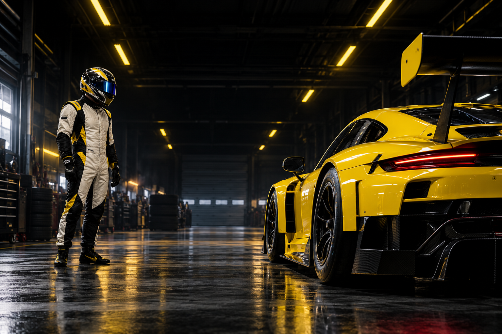
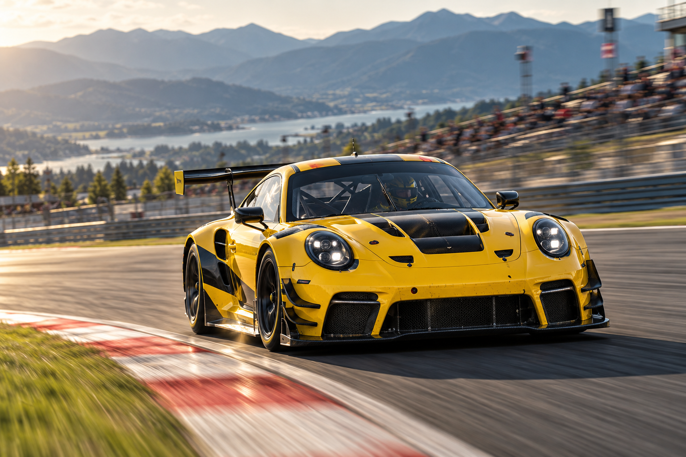
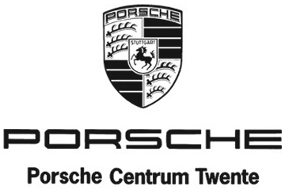
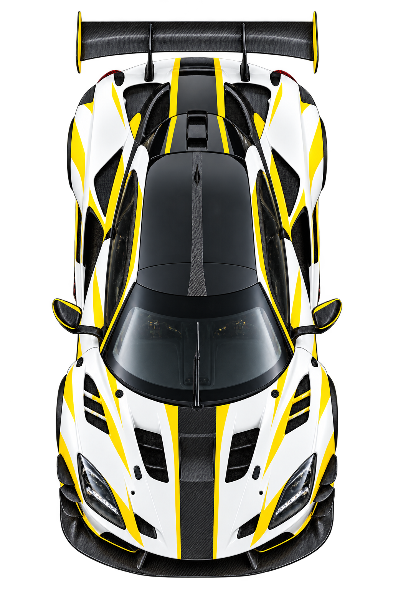

Every lap is a test.
Of the car. Of myself.
Rotterdam
The Netherlands
10+
Years in motorsport
21
Years old*
NICK HO
Racing is about chasing more than speed.
It’s about finding the limit. Then going further.

I’M DRIVEN BY PROGRESS.
BY FINDING THAT ONE PERCENT THAT MAKES ALL THE DIFFERENCE. EVERY LAP A LESSON. EVERY SESSION A CHANCE TO BECOME SHARPER. MORE FOCUSED. MORE COMPLETE.

THE FOUNDATION
A passion for racing starts long before the first green light. Karting provided the foundation: racecraft, discipline and the determination to improve with every session.
MEDIA & ARTICLES
A FIRST WIN IN PORSCHE CARRERA CUP BENELUX
AUTOSPORT / RACINGVICTORY AT THE RACING DAY IN ASSEN
ERASMUS MAGAZINE / PROFILELIFE BETWEEN THE CLASSROOM AND THE CIRCUIT
Editorial links from the reference site. Images are illustrative.
RACE CALENDAR 2026

Schedule reproduced from the reference website • 2026 season archive
WANT TO KNOW MORE ABOUT THE CHAMPIONSHIPS I COMPETE IN?
My Sponsorguide 2026 gives an indepth look at the series I race in, including the Porsche Carrrera Cup Deutschland and the Porsche Mobil 1 Supercup at Zandvoort
PDF未設定のため、現在ダウンロードはできません。GALLERY
04 / OFF THE GRIDIllustrative racing imagery • Hover to reveal the colour
CONTACT
Ready to support or just have questions?
Design preview only.This form does not send messages.